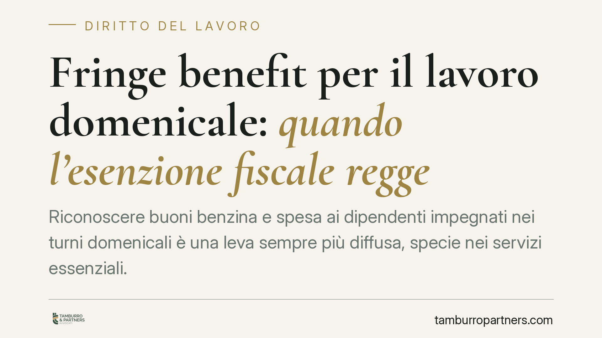

Fringe benefit per il lavoro domenicale: quando l'esenzione fiscale regge
Riconoscere buoni benzina e spesa ai dipendenti impegnati nei turni domenicali è una leva sempre più diffusa, specie nei servizi essenziali. Ma l'esenzione da imposte e contributi non è automatica: dipende dal regime fiscale applicato, dal tetto annuale vigente e, soprattutto, dal modo in cui il beneficio viene collegato alla prestazione. Un errore di impostazione può trasformare il vantaggio in retribuzione tassata.

Il caso e perché conta
Nei settori dei servizi pubblici essenziali il lavoro domenicale è strutturale. Per compensarlo, molte imprese affiancano alla retribuzione ordinaria beni e servizi come buoni carburante o buoni spesa. La domanda ricorrente è se tali erogazioni siano esenti da IRPEF e contributi o se concorrano a formare reddito di lavoro dipendente.
La risposta non è univoca. Dipende dal regime fiscale entro cui l'erogazione viene inquadrata e dalle modalità con cui è costruita. Prima di impostare qualsiasi piano è quindi necessario individuare la base normativa corretta, perché due regimi distinti producono conseguenze diverse.
Inquadramento normativo
Il punto di partenza è il principio di onnicomprensività dell'art. 51, comma 1, del TUIR: costituisce reddito di lavoro dipendente «tutto ciò» che il lavoratore percepisce in relazione al rapporto, in denaro o in natura. Le esenzioni sono dunque eccezioni tassative, da interpretare in senso stretto.
La prima eccezione rilevante è quella dei fringe benefit di cui all'art. 51, comma 3, TUIR: i beni e servizi ceduti al dipendente non concorrono a formare reddito entro una soglia annuale. La soglia ordinaria è pari a 258,23 euro, ma negli ultimi anni è stata ripetutamente elevata da misure a validità annuale (tipicamente a 1.000 euro, o 2.000 per i lavoratori con figli a carico). Si tratta di interventi non strutturali: l'importo applicabile va sempre verificato con riferimento allo specifico anno d'imposta, perché non è acquisito in via permanente.
Attenzione al meccanismo di superamento soglia: se il valore complessivo dei beni e servizi eccede il limite, non è imponibile solo l'eccedenza, ma l'intero importo concorre a formare reddito. È una regola severa, che impone un monitoraggio puntuale delle erogazioni cumulate nell'anno.
Diverso è il regime del welfare aziendale ex art. 51, comma 2, lett. f) e f-bis), TUIR, con le opere e i servizi individuati anche dal D.M. 25 marzo 2016. Qui l'esenzione non è soggetta al tetto dei fringe benefit, ma presuppone finalità e categorie di spesa specifiche (educazione, assistenza, istruzione) e requisiti propri. Buoni carburante e buoni spesa generici rientrano di regola nella logica del fringe benefit, non in quella del welfare: sovrapporre i due regimi è un errore frequente e pericoloso.
Sulla disciplina specifica dei buoni carburante si segnala che misure dedicate sono state introdotte da interventi emergenziali (ad esempio il DL 5/2023), con soglie e condizioni proprie. Anche questa base normativa va verificata caso per caso rispetto all'anno di erogazione, senza darla per consolidata.
Implicazioni pratiche
Il nodo centrale è la spersonalizzazione del beneficio. Perché l'esenzione regga, i buoni devono essere riconosciuti alla generalità dei dipendenti o a categorie omogenee (ad esempio, tutti gli addetti ai turni domenicali), non in funzione del rendimento individuale.
Qui emerge il rischio più insidioso. Se i buoni vengono parametrati al numero di domeniche lavorate o alle ore prestate, assumono la natura di retribuzione variabile collegata alla prestazione. In tal caso l'Amministrazione finanziaria può riqualificarli come compenso imponibile, con recupero di imposte, contributi e sanzioni. Il collegamento diretto prestazione-premio è esattamente ciò che fa saltare l'esenzione.
La differenza è sottile ma decisiva: compensare chi lavora la domenica attraverso una categoria omogenea è legittimo; premiare chi lavora *di più* la domenica tende a configurare retribuzione.
Cosa fare in concreto
- Formalizzare il piano: definire per iscritto il regolamento di erogazione, individuando la platea dei beneficiari come categoria omogenea e non su base individuale.
- Verificare la soglia dell'anno: ancorare il valore dei buoni al tetto dei fringe benefit effettivamente vigente per quell'anno d'imposta, controllando il cumulo con altri beni e servizi già erogati.
- Evitare la correlazione al rendimento: non parametrare i buoni al numero di turni o ore domenicali, per non esporsi alla riqualificazione come retribuzione variabile.
- Distinguere i regimi: non inserire buoni spesa e carburante tra le voci di welfare ex comma 2 se la loro natura è quella del fringe benefit del comma 3.
- Conservare la documentazione: tracciare delibere, regolamento, importi e beneficiari, a supporto in caso di controllo.
È opportuno strutturare il piano sin dalla fase di progettazione, verificando la base normativa e la soglia aggiornata all'anno di riferimento.
Disclaimer
Contributo informativo a cura di Tamburro & Partners - Avv. Giuseppe Tamburro. Non costituisce parere legale.
Ogni storia di lavoro ha i suoi tempi.
Se gestisci HR e vuoi un confronto su contenzioso, ispezioni o licenziamenti, scrivi allo studio. Ti rispondiamo entro un giorno lavorativo.